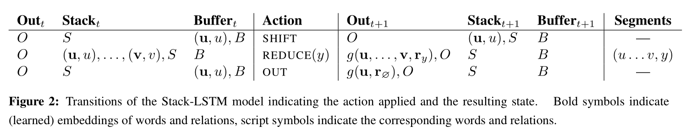

1. Transition-Based Chunking Model
s an alternative to the LSTM-CRF discussed in the previous section, we explore a new architecture that chunks and labels a sequence of inputs using an algorithm similar to transition-based dependency parsing.
[info]
transition-based dependency parsing 基于转移的依赖分析
This model directly constructs representations of the multi-token names (e.g., the name Mark Watney is composed into a single representation).
This model relies on a stack data structure to incrementally construct chunks of the input. To obtain representations of this stack used for predicting subsequent actions, we use the Stack-LSTM presented by Dyer et al. (2015), in which the LSTM is augmented with a “stack pointer.” While sequential LSTMs model sequences from left to right, stack LSTMs permit embedding of a stack of objects that are both added to (using a push operation) and removed from (using a pop operation). This allows the Stack-LSTM to work like a stack that maintains a “summary embedding” of its contents. We refer to this model as Stack-LSTM or S-LSTM model for simplicity.
[success]
普通LSTM： 从左往右依次加数据
栈LSTM = stack-LSTM = S-LSTM = LSTM + 栈顶指针
S-LSTM： 栈顶可以增加或移除数据，栈中的信息可以看作是内容的summary embedding
Finally, we refer interested readers to the original paper (Dyer et al., 2015) for details about the Stack-LSTM model since in this paper we merely use the same architecture through a new transition-based algorithm presented in the following Section.
1.1. Chunking Algorithm
We designed a transition inventory which is given in Figure 2 that is inspired by transition-based parsers, in particular the arc-standard parser of Nivre (2004).
[info]
transition inventory：过滤库存
[?] arc-standard parser

In this algorithm, we make use of two stacks (designated output and stack representing, respectively, completed chunks and scratch space) and a buffer that contains the words that have yet to be processed.
[success] 算法所使用的数据结构：
output： 栈结构，用于chunk space
stack： 栈结构，用于scrach space
buffer： buffer结构，用于存放没有处理的word
The transition inventory contains the following transitions: The SHIFT transition moves a word from the buffer to the stack, the OUT transition moves a word from the buffer directly into the output stack while the REDUCE (y) transition pops all items from the top of the stack creating a “chunk,” labels this with label y, and pushes a representation of this chunk onto the output stack.
[success] 算法提供的基于数据结构的操作：
SHIFT： buffer -> stack
OUT: buffer -> output
REDUCE: pop, label for all, -> output
The algorithm completes when the stack and buffer are both empty. The algorithm is depicted in Figure 2, which shows the sequence of operations required to process the sentence Mark Watney visited Mars.
The model is parameterized by defining a probability distribution over actions at each time step, given the current contents of the stack, buffer, and output, as well as the history of actions taken. Following Dyer et al. (2015), we use stack LSTMs to compute a fixed dimensional embedding of each of these, and take a concatenation of these to obtain the full algorithm state. This representation is used to define a distribution over the possible actions that can be taken at each time step. The model is trained to maximize the conditional probability of sequences of reference actions (extracted from a la- beled training corpus) given the input sentences.
[success]
训练阶段的目标：基于以下信息（条件）计算出每个action的概率（条件概率）
（1）当前stack中的信息
（2）当前output中的信息
（3）当前buffer中的信息
（4）action历史
使用LSTM将以上内容向量化为固定长度的embedding，用于下一步计算概率。
结束：
stack为空，buffer为空。
根据“output, stack, buffer, 操作历史”，决定“这一次采取某个操作的概率”。
To label a new input sequence at test time, the maximum probability action is chosen greedily until the algorithm reaches a termination state. Although this is not guaranteed to find a global optimum, it is effective in practice.
[success]
测试阶段使用贪心算法选择当前时刻的Action。
即只考虑使当前时间概率最大的Action，而不考虑整体上概率最大的Action序列。
Since each token is either moved directly to the output (1 action) or first to the stack and then the output (2 actions), the total number of actions for a sequence of length n is maximally 2n.
It is worth noting that the nature of this algorithm model makes it agnostic to the tagging scheme used since it directly predicts labeled chunks.
[warning] [?]这一段没看懂
1.2. Representing Labeled Chunks
When the REDUCE (y) operation is executed, the algorithm shifts a sequence of tokens (together with their vector embeddings) from the stack to the output buffer as a single completed chunk. To compute an embedding of this sequence, we run a bidirectional LSTM over the embeddings of its constituent tokens together with a token representing the type of the chunk being identified (i.e., y). This function is given as g(u,...,v,r y ), where r y is a learned embedding of a label type. Thus, the output buffer contains a single vector representation for each labeled chunk that is generated, regardless of its length.
[success]
REDUCE时用双向RNN分析这组词的label。